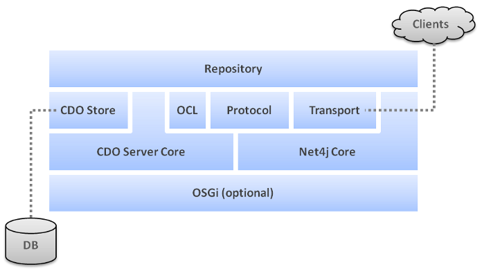

Understanding the Architecture of a Repository


Understanding the Architecture of a Repository |
|
The main building block of a CDO repository is split into two layers, the generic repository layer that client applications interact with and the database integration layer that providers can hook into to integrate their data storage solutions with CDO. A number of such integrations already ship with CDO, making it possible to connect a repository to all sorts of JDBC databases, Hibernate, Objectivity/DB, MongoDB or DB4O.
While technically a CDO repository depends on EMF this dependency is not of equal importance as it is in a CDO
application. In particular the generated application models are not required to be deployed to the server because a
CDO repository accesses models reflectively and the model objects are not implemented as EObjects on
the server.
The following diagram illustrates the major building blocks of a CDO repository:

All components of CDO are implemented as OSGi bundles. The core components of
both clients and servers do not require OSGi to actually run to be functional, they can perfectly be operated
stand-alone. If OSGi is running the setup and configuration of some CDO facilities is a little simpler than in
stand-alone mode because the needed factories get automatically registered with the central
wiring container.
CDO utilizes an operations and maintenance framework to abstract common platform services such
as logging, tracing, monitoring and configuration. Without the need to depend on additional external libraries these services integrate seamlessly
with OSGi, if available at runtime, or emulate similar functionality if running stand-alone.
The core of a CDO server consists of one or more repositories each of which, in turn, consists
of several generic (network and storage independent) components, such as:
revision manager and cache,
branch manager,
package registry,
lock manager,
session manager,
commit info manager,
query handler provider.
In addition the following types of handlers can be hooked up with a repository:
Read access handlers,
Write access handlers,
Commit info handlers.
All persistent aspects (the storage/retrieval of data in/from a database system) are fully abstracted
through the service provider interfaces (SPI) IStore, IStoreAccessor and IStoreChunkReader.
Concrete implementations are fully separated and can be plugged into the core as described in CDO Store.
All communication aspects (the sending/receiving of signals to/from a network system) are fully abstracted
through the service provider interface (SPI) ISessionProtocol. Concrete implementations are fully separated
and can be plugged into the core as described in Protocol.
A concrete storage adapter, an IStore implementation that operates on top of the generic server
core. A number of such stores already ship with CDO, making it possible to connect a repository to all sorts of
JDBC databases, Hibernate, Objectivity/DB, MongoDB or DB4O.
See Also:
A concrete communications adapter, an ISessionProtocol implementation that operates on top of the generic
server core. The only session protocol implementation that currently ships with CDO is based on
Net4j Core.
An IQueryHandler implementation that provides support for OCL queries by executing them at the generic repository level,
i.e., independent of the concrete CDO Store being used.
The OCL component is optional.
The Net4j Signalling Platform is an extensible client/server communications framework. Net4j eases the
development of fast and maintainable application protocols that are independent of the
physical transport medium. Transport protocols are pluggable and Net4j ships with support for
TCP, SSL, HTTP and JVM
(in-process) transport. The core of Net4j is a fast, asynchronous and non-blocking buffer
multiplexing kernel, based on OSGi but also executable stand-alone.
See Also:
A concrete transport adapter, an IAcceptor implementation that operates on top of the
Net4j core. Net4j currently ships with IJVMAcceptor, ITCPAcceptor
(optionally with SSL support) and IHTTPAcceptor.